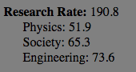
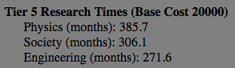

Minimum System Science
Minimum System Science is the approximate amount of science that a system needs to break even with its tech penalty.
Notes
Minimum System Science assumes that the system has an equivalent amount of each type of science. i.e. 1/3 is physics, 1/3 society and 1/3 engineering.
The minimum is chosen based on the combined research rate. You can use "Add a System" to get an idea of the minimum science necessary for each category.
Science Rates

This number is the actual value of your science weighted against your empire's tech penalties.
Notes
The number next to Research Rate is the combined research rate for all technologies. It could be thought of as the average reserach rate. An increase in this number means that the average rate is improved (even if some specific rates might decrease).
This number should be used as a precise comparitive tool. For instance, if your empire's physics rate is twice that of another empire's physics rate, it means that you will research physics technologies exactly twice as quickly as they do.
I've mostly found it useful as a measure of my own progress between different games because I now know exactly how good my research is relative to previous runs.
Tier 5 Research Times

How long it would take to research the tier 5 technologies at the current research rate. Tier 5 technologies are mostly repeatables and a few rare techs like Gateway Construction and Mega-Engineering.
Notes
Increases and decreases in direct proportion to Research Rate.
I added this because I thought a clearer visualization/obviously applicable example of the Science Rate values might be helpful to players. Mathematically they may as well be the same number.